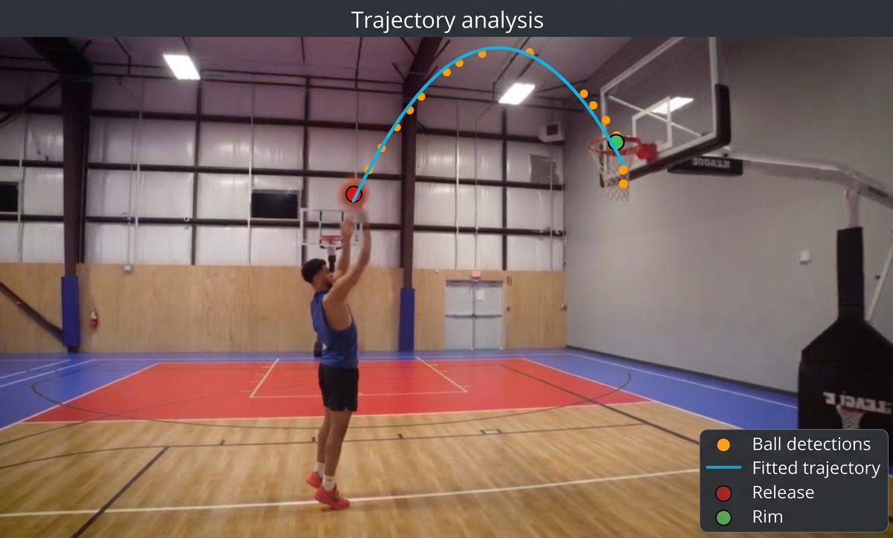
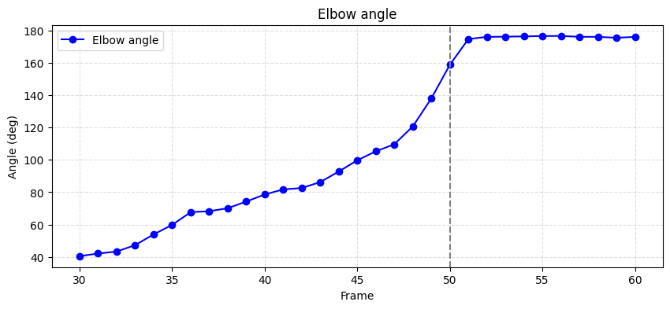
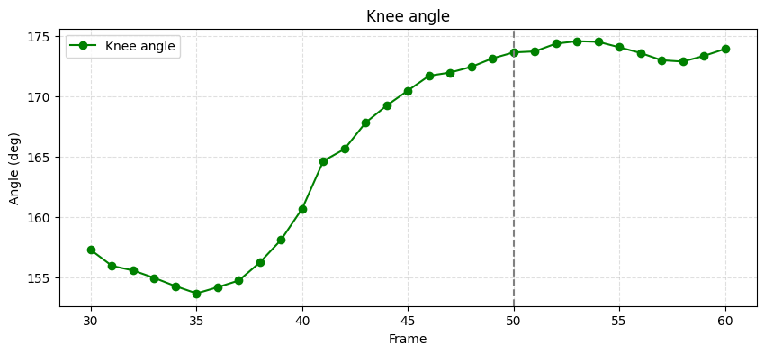
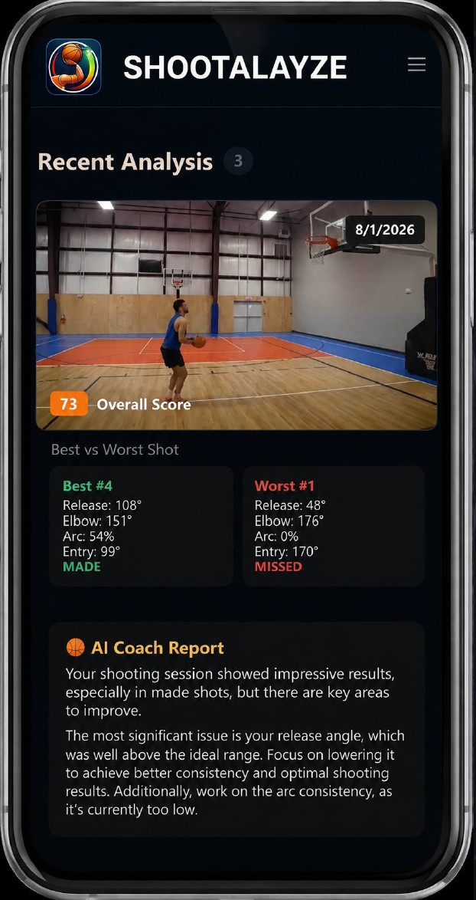

Release & entry angle
The launch angle off your hand and the angle the ball drops through the rim, fitted from the real trajectory.
Film one shot on your phone. Shootalyze returns the release angle, the joint mechanics and the entry angle, then tells you the single thing to change.

The gap
You can watch the same clip twenty times and still be guessing. "Shoot it flatter" is an opinion. 57 degrees is a measurement.
The variables that decide a make from a miss are angles, and angles are exactly what the human eye is worst at judging at full speed.
Real pipeline output
Every number, chart and line of feedback below came out of the pipeline for one real shot. Nothing here is illustrative.


On the phone
A mobile build is in testing. It works through a whole session rather than a single shot, scores it, and points you at the rep worth studying.
Screenshot from the build in testing

How it works
Phone on a tripod or a friend filming from the side. That is the whole setup.
Pose estimation finds the body, the ball and the exact release frame.
Angles, charts and a short note on the one thing to change next rep.
A normal video from the side. No markers, no sensors, no special court, no extra hardware to buy.
It tracks the ball, fits the trajectory, isolates the release frame and measures every joint angle through the motion.
Numbers you can compare rep to rep, plus one specific cue instead of a general opinion.
What comes back
The launch angle off your hand and the angle the ball drops through the rim, fitted from the real trajectory.
Elbow and knee angles frame by frame, so extension and sequencing show up as a curve instead of a feeling.
How high the ball actually leaves your hand, the variable most players never measure once.
The measurements turned into plain language, ending in the single adjustment worth making.
The difference
From the court
Placeholder slots, ready for real quotes once you collect them.
Quote about seeing their real release angle for the first time and what changed after.
Quote from a coach about using the numbers alongside their own eye during sessions.
Quote about a specific mechanical flaw the pipeline caught that nobody had spotted.
FAQ
Release angle, entry angle, release height, elbow and knee angles across the motion, the isolated release frame, the plotted charts, and a written note.
No. A phone camera filming from the side is enough. No markers, no sensors, no calibration rig.
Not yet. The pipeline is working and a mobile version is in testing. Early access goes to the waitlist first.
Filming gives you a picture. This gives you numbers you can compare between reps, which is the only way to know whether a change actually worked.
It is built around the jump shot and free throw, filmed side on, with the full motion and the rim both in frame.
Early access goes out to the waitlist before anywhere else.
Get early access